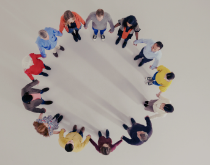
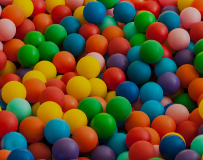
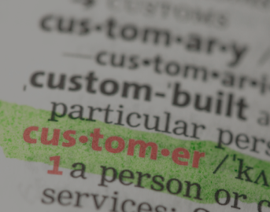
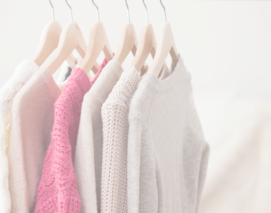
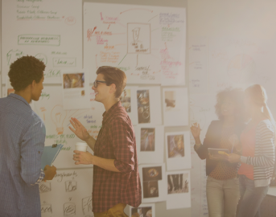
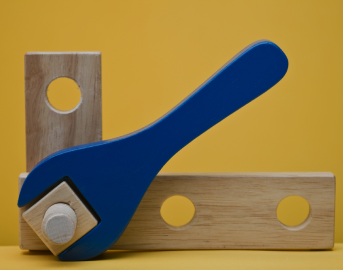

‘GS리테일다운 생각’은 4가지의 F로 표현됩니다.
각각의 F에는 우리가 중요하게 지켜왔던, 앞으로 유지하거나 더해야 한다고 생각한 우리만의 가치들이 담겨 있습니다.

FAIR
공정함을 지키고 사회와 환경에 기여합니다
FAIR
GS리테일의 ‘공정과 책임’은 행동으로
나타납니다. 우리는 고객과 파트너사,
또 서로에게 한 진실된 약속을 지켜나갑니다. 사회와 환경이 우리로 인해 더 건강해지도록 노력합니다.
Friendly
다양성을 인정하고
서로를 존중합니다
Friendly
많은 동료의 수 만큼, 우리에겐 다양한 생각과 관점이 존재합니다. 다름에서 오는 충돌도,
같은 목표를 향해 더 잘 나아가기 위한
과정임을 믿습니다. 함께 완성해 갈 우리를
위해, 내가 먼저 동료를 배려하고 존중합니다.
Fresh
창의와 도전을 장려하여 회사와 개인이 함께 성장합니다
Fresh
우리는 어제의 성공에 머무르지 않습니다.
늘 변화에 귀 기울이고, 조금은 두렵지만
새로운 변화를 시도합니다. 어제보다 더 나은 내일을 위해 도전합니다. 도전을 통해 쌓인
경험은 우리를 성장하게 합니다.

Fun
유연하고 자율적인 환경에서 즐겁게 일합니다
Fun
우리는 연차나 나이, 부서로 구분된 명확한
선보다, 목표를 중심으로 뭉친 유연한 원을
추구합니다. GS리테일에서는 누구든 손을
들고 이야기하고, 주도적으로 실행할 수
있습니다. 내가 생각하고, 질문하고, 실행하는
‘나의 일‘에서 즐거움을 찾을 수 있습니다.
GS Way
우리의 일하는 방식
‘GS Way’는 지금까지 우리가 해왔던 것들 중에서, ‘GS리테일 다웠던 것‘과 ‘새로운 비전을 위해 해야할 것’을 고민하여 반영한 결과입니다.
매일의 업무 중 고민이 생겼을 때, 어떻게 하는 게 맞을까 망설여질 때, 의사결정을 할 때, 앞으로 8가지의 GS Way가 우리의 기준이 됩니다.

고객 최우선
모든 생각과
의사결정의 기준은
고객입니다
모든 생각과 의사결정의 기준은 고객입니다
우리가 하는 모든 일의 중심에는 고객이
있습니다. 우리는 고객이 ‘진짜 원하는 것’을 찾기 위해 노력합니다. 의사결정을 할 때
고객의 관점에서 생각하고, 고객이 얻을
가치를 기준으로 판단합니다.

트렌드 선도
트렌드를 감지하고
고객이 느끼는
차이를 만듭니다
트렌드를 감지하고 고객이 느끼는 차이를 만듭니다
우리는 끊임 없이 변화하는 트렌드를
감지하며 일합니다. 우리는 고객의 니즈가
어떤 방향으로 흐르고 있는지 살피고,
발견하여, 고객이 원하는 것을 반 발 먼저
준비하는 사람들입니다.
최고 지향 목표 설정
적당한 타협보다
가슴 설레는 목표를
지향합니다
적당한 타협보다 가슴 설레는 목표를 지향합니다
우리는 적당히 만족스런 결과를 너머
탁월함을 지향합니다. 도전적이더라도 고객을 위한 것이라면 높은 목표를 세우고, 목표를
달성해내기 위한 방법을 찾고, 추진해냅니다.
데이터 중심 의사결정
근거는 언제나 데이터로부터 찾습니다
근거는 언제나 데이터로부터 찾습니다
우리는 과거의 경험이 아닌 데이터에 기반해 이야기합니다. 내가 생각한대로 고객이 받아들이는지, 그렇지 않다면 원인이 무엇인지,
개선 포인트는 무엇인지...모든 질문의 답을
데이터로부터 확인하고 의사결정합니다.
신속한 판단과 실행
신속히 판단하고 즉시 실행합니다
신속히 판단하고 즉시 실행합니다
우리는 최적의 타이밍을 놓치지 않기 위해, 신속히 판단하고 실행합니다. 고객에게 전달되기 까지의 가장 효율적인 과정을 항상 고민합니다.

적극적인 소통과 협업
소통으로 시작해서
협업으로 완성합니다
소통으로 시작해서
협업으로 완성합니다
우리는 일을 시작할 때, 함께하는 동료들에게 정보를 공유하고 충분히 소통합니다. 목표에 대한 같은 이해를 기반으로, 내 일, 네 일이
아닌 ‘우리의 일’을 함께합니다. 혼자서는 하기 어려웠을 일들을 협업을 통해 완성합니다.

비효율 개선
익숙한 비효율은
바로 개선합니다
익숙한 비효율은
바로 개선합니다
우리는 익숙하게 유지해 온 많은 일들을 당연하게 생각하지 않습니다. 지금 이 일은 누구를 위해, 왜 이렇게 해야 하는지 끊임없이 질문을 던집니다. 비효율이 있다면 내가 직접 새롭게, 가치 있는 일로 개선합니다.
기본에 충실
핵심에 다가가기 위해
본질에 집중합니다
핵심에 다가가기 위해
본질에 집중합니다
우리는 고객에게 필요한 것, 즉 최고의 상품과 편리한 서비스를 제공하는 우리의 역할을
잊지 않습니다. 멋진 꾸밈을 좇다가 핵심을
놓치지 않도록 본질에 집중합니다.